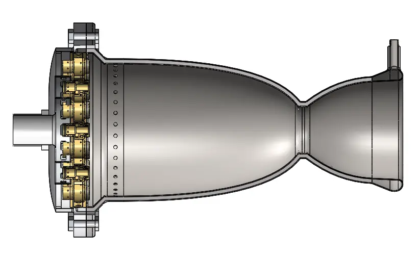

The Harvard Rocket Propulsion Group is a student-led engineering team within Harvard's SEDS chapter. Our mission is to develop increasingly ambitious liquid bipropellant propulsion systems from spark torch igniters, to full-scale, flight-configuration engines. Our goal is to provide passionate student engineers with industry-applicable experience in the design, manufacturing, hot fire, and test flight of propulsion systems, and to expand Harvard's footprint into the aerospace landscape.Founder:Technical Overview and Presentation:
With similar projects having been previously rejected by Harvard administrators, I sought to compile a comprehensive and compelling technical outline for the project demonstrating its balance of feasibility and ambition. I conducted an extensive propulsion literature review and interviewed more than two dozen collegiate and industry experts to construct a 60-slide outline for HRPG. I presented this outline to administrators at the Harvard Engineering and the EH&S Office. After receiving approval, I recruited a team of 12 and raised $8000 toward HRPG's first project: a gas/liquid heatsink spark torch ignitor.President:Phase 0: Spark Torch Igniter
Phase 0 is the first of HRPG's three propulsion objectives. It's goal is to construct a feed system and test stand for a 10 lbf igniter fueled with gaseous oxygen and nitrogen-pressurized ethanol. This phase of the project will allow us to establish competency in the core technical demands of a rocket engine test stand: fuel feed and storage, injection, ignition, and data collection.

Phase 1-Phase 2: Full Scale Rocket Engines
Phase 1 and 2 will comprise of successively more ambitious propulsion projects graduating from gaseous oxidizer to liquid, and building from static fires to flight tests. Phase 1 and 2's goals are as follows:
Phase 1: The goal of Phase 1 is a 350-500 lbf liquid bipropellant engine. This engine will include liquid oxygen and ethanol or kerosene fuel, pintle fuel injection, heat sink or ablative cooling, a cryogenic-rated fuel feed system.
Phase 1A: The goal of Phase 1A to take the Phase 1 engine and reconfigure the fuel feed system for integration with a rocket fuselage and recovery system. Our objective is to flight test this rocket at the Spaceport America Cup in 2024.
Phase 2: The goal of Phase 2 is to utilize our Phase 1 test stand to test increasingly ambitious liquid bipropellant engines including coaxial swirl fuel injection, regenetive cooling, and more.
Strict procedures for wire handling, test setup, and data documentation